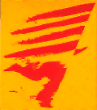

|
correllengua
2003 Sant Andreu de Palomar |

 |
 |
 |
 |
 |
|
Manifest de 2n Correllengua de Sant Andreu de Palomar El retrocés en l'ús social del català és un fet objectiu que, per si faltaven poques proves, s'ha vist recentment demostrat a través d'un estudi que assegura que els i les joves parlen menys el català ara que fa 25 anys. Com pot ser, si tenim en compte que aleshores no s'ensenyava a les escoles? El problema és que no n'hi ha prou amb l'educació en català, necessària però no suficient, sinó que cal recuperar la consciència de poble, aquella que ens distingeix; cal recuperar el sentiment que la nostra llengua forma part de la nostra cultura, i que l'hem d'usar perquè continuï viva. Però aquests esforços que nosaltres puguem fer topen amb les traves constants que ens posen els estats espanyol i francès. Així, des d'aquests instàncies estrangeres i opressores se'ns inculca una ideologia i ensenyament alienants, ja sigui per espanyolistes o jacobinistes, idees tan perverses i feixistes com el "Foro Babel" i altres trampes vestides de tolerància que l'únic que fan és perpetuar la diglòssia a què es troba sotmès el català i revestir de demòcrata la imposició d'una llengua que no és la de la nostra terra. A aquests esforços ideològics que pretenen acusar-nos als i les catalanoparlants d'intolerants, cal sumar-hi una constitució i unes lleis que obliguen al coneixement del castellà o el francès en tots els àmbits de la nostra vida quotidiana, però no així del català. L'exemple més extrem és la prohibició de l'ensenyament de les llengües minoritzades a l'estat francès, fet que converteix l'ensenyament en català en proscrit i poc menys que impossible a la Catalunya Nord. A l'estat espanyol, i en la mateixa línia, el secessionisme lingüístic fa estralls en el català, ja que pretén fer creure que els dialectes que es parlen a les diferents comunitats autònomes en què ens han dividit constitueixen per sí soles una llengua diferent de la resta. Això forma part d'aquesta enculturació que patim, d'aquest esforç ideològic espanyol que ens vol separar com a poble trencant un dels pocs nexes que encara no han pogut destruir, la nostra llengua. I per si n'hi havia poc, l'estat espanyol ha posat en marxa una altre atac contra les llengües minoritzades dels pobles que oprimeix augmentant per decret les hores de castellà a l'ensenyament primari i secundari, en detriment, òbviament, de les que es fan en català. Això obligarà que matèries que no són pròpiament de llengua es facin en castellà, fet que comportarà una educació i socialització dels nens i nenes en castellà. És a dir, creixeran generacions que hauran après certes assignatures en castellà, i no sabran com es diuen les coses en català, en la seva pròpia llengua. Què pot passar si la canalla aprèn, per exemple, geografia en castellà? Així doncs, davant d'aquesta ofensiva franco-espanyola, hem de lluitar per recuperar l'ús social del català i estendre'l a tots els àmbits de la nostra vida: a l'escola, a l'institut, a la feina, amb la parella, als espais de lleure, a la universitat, amb els amics i amigues, als comerços i botigues, etc., en definitiva, al carrer. Hem d'estendre el català, perquè en volem viure plenament. Però
sabedors i sabedores que amb això no n'hi ha prou, hem de lluitar també per trencar
amb aquestes lleis que ens mantenen sotmesos i sotmeses. No podem comptar amb
un marc legal i uns partits botiflers que es venen a Espanya i França, tot abaixant
el cap i relegant el seu poble i la seva llengua a la desaparició. No hi ha reformes
dins aquesta opressió que puguin permetre la supervivència de la nostra llengua.
Així doncs, cal que lluitem per la Independència dels Països Catalans, ja que
només així el nostre poble serà capaç de decidir per sí mateix. Només així viurem
amb plena normalitat la nostra llengua, i serem capaços i capaces de donar-la
a conèixer sense traves ni imposicions a tots aquells i aquelles nouvingudes a
la nostra terra. Perquè, entre tots i totes, la puguem utilitzar amb plenitud
i normalitat, i puguem estimar i defensar la nostra llengua, la nostra terra,
el nostre poble. |
Programa d'actes
trasbalssat per l'enderrocament del local del Casal Popular Onze de Setembre per part de la Generalitat (!)
|
